Bad debt reserves in Accounts receivable
[!include[banner](../includes/banner.md)]This topic provides information about the tax registers for receivables, hopeless debts, and their write-off.
Accounts receivable are formed based on outstanding invoices and advances that have been issued. Accounts receivable are considered bad if they aren't repaid within the period that was agreed on in the contract. Hopeless debts are debts that can be written off. An example is a debt that lasts more than three years.
The amounts of bad and hopeless debts are identified during the inventory of accounts receivable and are included in the allowance for bad debts reserve. The inventory is done on the end date of the previous tax period.
The bad debts reserve for profit tax accounting purposes is formed based on the number of days that the payment period is exceeded by:
- Fewer than 45 days: Arrears aren't included in the reserve.
- Between 45 and 90 days: The reserve amount is 50 percent of the outstanding amount.
- More than 90 days: The reserve amount is 100 percent of the outstanding amount.
The amount of the reserve for profit tax accounting can't exceed 10 percent of the revenue for the reporting tax period. This amount is adjusted for the reserve balance of the previous period:
- If the amount of the current quarter's reserve is less than the amount of the previous quarter's reserve balance, the difference is included in non-operating income when the reserve amount for the reporting period is formed.
- If the amount of the current quarter's reserve is more than the amount of the previous quarter's reserve balance, the difference is included in non-operating expenses when the reserve amount for the reporting period is formed.
The bad debts reserve can be used to cover only hopeless debts:
- If the reserve amount is more than the amount of hopeless debts that are written off, the difference is transferred to the next reporting period.
- If the reserve amount is less than the amount of hopeless debts that are written off, the difference is included in non-operating expenses that reduce the taxable base of profit.
The following tax registers provide information about accounts receivable and calculate the bad debts reserve in profit tax accounting and business accounting:
Tax registers for the inventory of accounts receivable:
- Accounts receivable inventory act
- Accounts receivable inventory act (business accounting)
Tax registers for calculating the bad debts reserve in accounts receivable:
- Accounts receivable - bad debts reserve
- Accounts receivable - reserve (business accounting)
- Accounts receivable - reserve details
- Accounts receivable - reserve details (business accounting)
Tax registers for collecting information about the movement of the bad debts reserve in accounts receivable:
- Accounts receivable - bad debt reserve movement
- Accounts receivable - reserve movement (business accounting)
- Accounts receivable - reserve movement details
- Accounts receivable - reserve movement details (business accounting)
Tax registers for collecting information about the movement of accounts receivable:
- Accounts receivable movement
- Accounts receivable movement (business accounting)
If you manually calculate tax registers one by one, consider using the following sequences for tax register calculation. If you calculate all tax registers together for the period, these sequences will automatically be used.
When you create the tax register journal for the current period, you should assume that the tax registers for the previous period were calculated in the following way:
- At the end of the previous period, a tax register for the inventory of accounts receivable should have been calculated.
- At the end of the previous period, a tax register for the calculation of the bad debts reserve in accounts receivable should have been calculated, based on the tax register for the inventory of accounts receivable. This register is the bad debts reserve for both the current period and future periods.
When you calculate tax registers for the current period, consider the following sequence of steps:
- During the current period, run the write -off procedure for some debts that were recognized as hopeless before the end of the previous period, or that became hopeless during the current period.
- Based on the information at the end of the previous period, and all operations during the current period, calculate the tax register by collecting information about the movement of accounts receivable.
- Calculate the tax register by collecting information about the movement of the bad debts reserve in accounts receivable. This register contains all the information about the movement and use of the reserve that was calculated at the end of the previous period.
- At the end of the current period, calculate the tax register for the inventory of accounts receivable. This register represents the status of all accounts receivable.
- At the end of the current period, calculate the tax register for the calculation of the bad debts reserve in accounts receivable. This register is the bad debts reserve for future periods.
Setup
Create and set up two debts calculation models
Debts can be calculated for profit tax accounting purposes and business accounting reports. Create two models, one for business accounting and one for tax accounting.
Go to Tax > Setup > Profit tax > Debts calculation models.
On the Action Pane, select New to create the first of the two models.
In the Model number field, enter the short name of the model. For example, name the model for business accounting RAP and the model for tax accounting TAX.
In the Description field, enter a detailed description of the model. For example, enter Business accounting for the RAP model and Tax accounting for the TAX model.
On the General FastTab, set the following fields:
- In the Period types field, select the calculation period. For example, select Months for the RAP model and Quarters for the TAX model.
- In the Accounting policy field, select Accounting object or Total.
- Leave the Reserve limit sequence field set to 0 (zero). You will configure the sequence later.
- Set the Reserve limit on the period adjustment option to Yes to apply the reserve limit only to the revenue adjustment for the current reporting period.
If you chose Accounting object in the Accounting policy section (for example, for RAP), on the Customer posting and Vendor posting FastTab, set up the ledger accounts and expense/income codes for the bad debts reserves posting:
- Select Add.
- In the Account code field, select Table, Group, or All.
- In the Account/Group number field, select the customer or vendor account number if you selected Table in the Account code field. If you selected Group in the Account code field, select the customer or vendor group number.
- In the Unrealized losses account field, select the ledger account to use to post losses in transactions on bad debts. For example, select account 91 non-operating income and expenses for the RAP model and account Н91 non-operating income and expenses in TAX for the TAX model.
- In the Unrealized income account field, select the ledger account to use to post income in transactions on bad debts. For example, select account 91 non-operating income and expenses for the RAP model and account Н91 off-balance sheet account for income for the TAX model.
- In the Bad debts reservation account field, select the ledger account to use to form the bad debts reserve. For example, select account 63 reserves for bad debts for the RAP model and account Н63 reserves for bad debts for TAX for the TAX model.
- In the Expense code field, select the expense code to link to the transaction for creating the bad debts reserve and writing off hopeless debts.
- In the Income code field, select the income code to link to the transaction for including the bad debts reserve in non-operation income.
- For the TAX model only: In the Summary account field, select the ledger account to use to offset the account that you selected in the Bad debts reservation account field to write off bad debt transactions. For example, select account Н62 off-balance sheet account for account receivable.
Note
For the RAP model, the ledger account from the customer posting profile is used for this purpose.
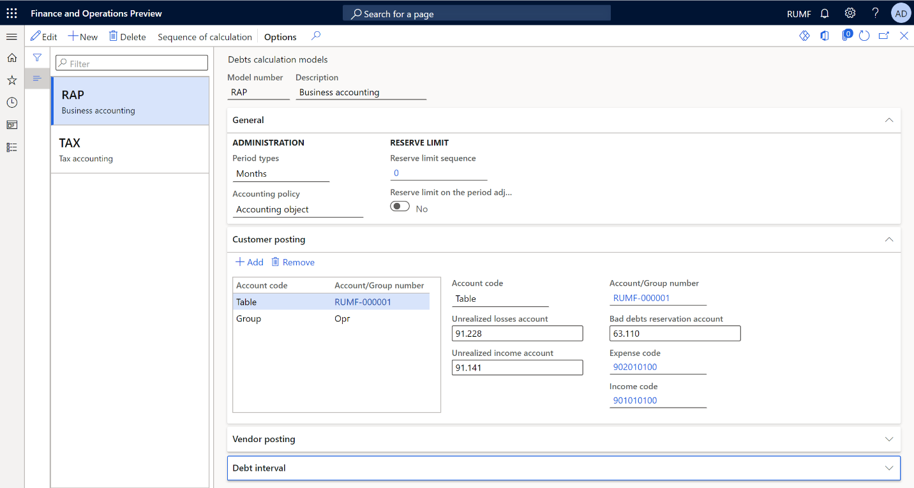
Alternatively, if you selected Total in the Accounting policy field, you complete the setup on the General FastTab instead of the Customer posting and Vendor posting FastTabs. Set the Unrealized losses account, Unrealized income account, Bad debts reservation account, Expense code, Income code, and Summary account fields as described in the preceding substeps.
On the Debt interval FastTab, set up the percentage that is used to calculate the bad debts reserve, depending on the number of overdue days:
- In the Period debt type field, specify Hopeless, and then select Add to create a bad debts interval.
- In the From field, enter the lower limit of the debt interval, in days, for the current line. The Days and Register fields are automatically filled in.
- In the Percent field, specify the percentage of debt that is included in the reserve for the current line.
- In the Description field, enter a detailed description of the debt interval.
The following illustration shows an example of the setup for a debt interval. For debts that are more than 70 days overdue, the reserve is calculated as 100 percent. For debts that are overdue between 50 and 70 days, the reserve is calculated as 80 percent. For debts that are overdue by fewer than 50 days, no reserve is calculated.
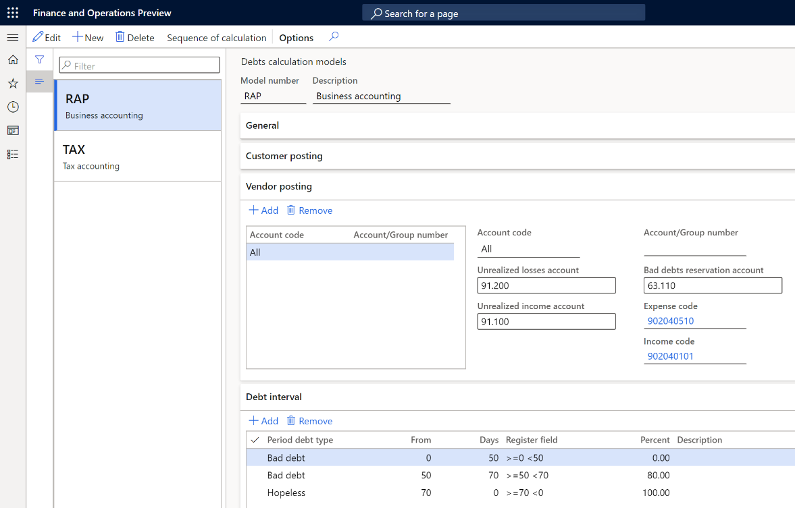
Repeat steps 2 through 7 to create the second model.
Set up the models for tax and business accounting
Go to Accounts receivable > Setup > Accounts receivable parameters.
On the Ledger and sales tax tab, in the Debtor debts section, in the Model number for business accounting field, select RAP.
In the Model number for tax accounting field, select TAX.
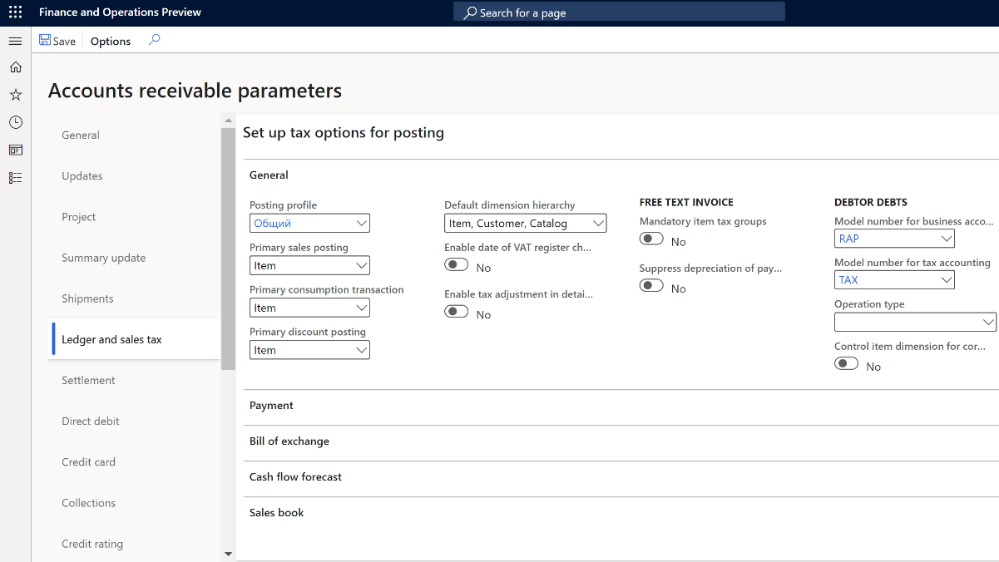
Create and set up registers
Depending on the settings of your debts calculation models, create and calculate the registers in each group of registers, as described in Profit tax registers journal.
| Register type | Comment |
|---|---|
| Tax registers for the inventory of accounts receivable | |
| Accounts receivable inventory act | For the TAX model |
| Accounts receivable inventory act (business accounting) | For the RAP model |
| Tax registers for calculating the bad debts reserve in accounts receivable | |
| Accounts receivable - bad debts reserve | For the TAX model when the Accounting policy field is set to Total |
| Accounts receivable - reserve (business accounting) | For the RAP model when the Accounting policy field is set to Total |
| Accounts receivable - reserve details | For the TAX model when the Accounting policy field is set to Accounting object |
| Accounts receivable - reserve details (business accounting) | For the RAP model when the Accounting policy field is set to Accounting object |
| Tax registers for collecting information about the movement of the bad debts reserve in accounts receivable | |
| Accounts receivable - bad debt reserve movement | For the TAX model when the Accounting policy field is set to Total |
| Accounts receivable - reserve movement (business accounting) | For the RAP model when the Accounting policy field is set to Total |
| Accounts receivable - reserve movement details | For the TAX model when the Accounting policy field is set to Accounting object |
| Accounts receivable - reserve movement details (business accounting) | For the RAP model when the Accounting policy field is set to Accounting object |
| Tax registers for collecting information about the movement of accounts receivable | |
| Accounts receivable movement | For the TAX model |
| Accounts receivable movement (business accounting) | For the RAP model |
Set up a limit for the bad debts reserve in tax accounting
Go to Tax > Setup > Profit tax > Rates.
On the Action Pane, select New to create a rate.
In the Rate code field, enter the unique code of the rate.
In the Calculation method field, enter Whole amount.
On the Values FastTab, in the Start date field, enter the first date when the value of the rate will be used in the sequence of calculation.
To set the reserve amount, in the Value field, enter the percentage of revenue. For example, enter 0.10.
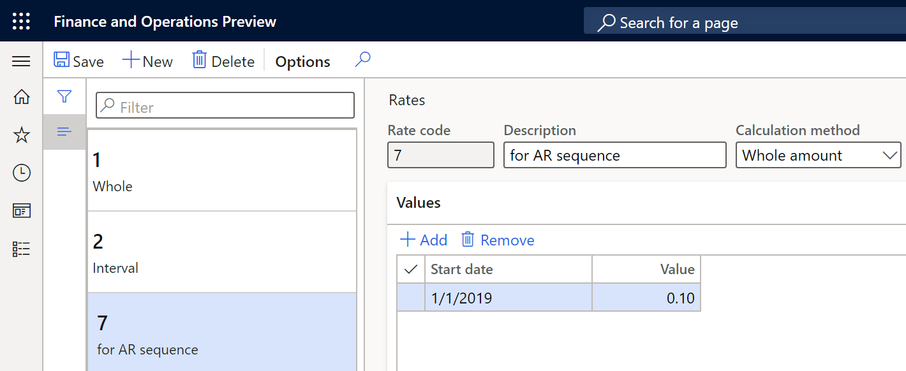
Go to Tax > Setup > Profit tax > Debts calculation models.
On the Action Pane, select Sequence of calculation to create a reserve limit sequence for revenue.
In the Channel reference field, specify the register code for the tax model.
On the Action Pane, select Counters.
Select New to create a counter.
In the Description field, enter a description of the counter.
In the Expense code field, select the expense code of the revenue.
On the Lines FastTab, create settings for calculating the revenue and reserve limit.
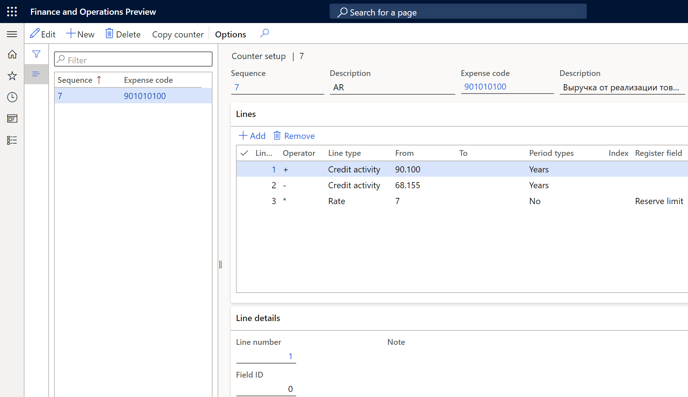
For more information about how to set up sequences of calculation, see Sequence of calculations.
- Go to the debts calculation models that you created earlier, and in the Reserve limit section, in the Reserve limit sequence field, enter the sequence for each model.
Set up a number sequence for the write-off of hopeless debts
- Go to Accounts receivable > Setup > Accounts receivable parameters.
- On the Number sequences tab, in the Number sequence code field, select the number sequence code for the Ledger voucher for debts amortization reference.
Exclude agreements from reserve calculation
For more information about how to create and set up agreements, see Set up and create agreements.
By default, sales agreements are included in the calculation of the bad debts reserve. To exclude an agreement from the calculation, follow these steps.
- Go to Accounts receivable > Orders > Sales agreements, and select the sales agreement to exclude from the calculation.
- Switch to the Header view, and then select Edit.
- On the Financial FastTab, in the Debtor debts field, specify Exclude from reserve in business accounting, Exclude from reserve in tax accounting, or both.
- Select Save.
Tax registers
Tax registers for the inventory of accounts receivable
There are two registers in this group.
| Register | Comment |
|---|---|
| Accounts receivable inventory act | For the TAX model |
| Accounts receivable inventory act (business accounting) | For the RAP model |
These registers reflect the balance of accounts receivable at the end of the reporting period. Accounts receivable are formed based on outstanding customer invoices and advances that are issued to vendors. All outstanding invoices are divided into categories that are defined on the Debt interval FastTab of the Debts calculation models page. The difference in days between the inventory date and the invoice due date determines the excess of the debt repayment period.
The following illustration shows an example of the Accounts receivable inventory act page.
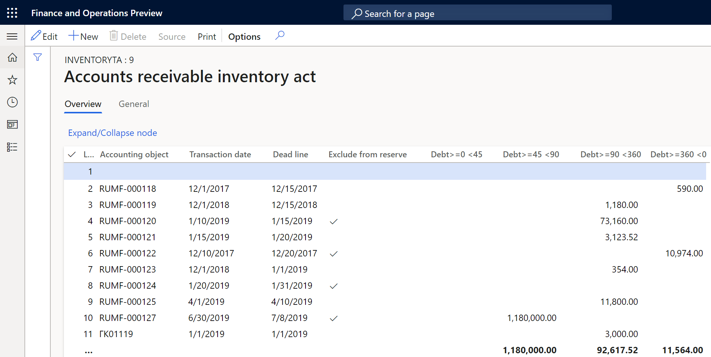
For each register line, you can review the information in the following columns:
- Line number
- Accounting object – The number of the customer invoice or vendor prepayment.
- Transaction date – The date of the document that is shown in the Accounting object column.
- Dead line – The date that the debt must be repaid by.
- Exclude from reserve – A selected checkbox indicates that the document is excluded from reserve calculation. You can change this value by selecting Edit on the Action Pane. In that case, you must recalculate the dependent registers.
- (Debt intervals) – There is a separate column for each debt period that you configured earlier (for example, Debt >=0 <45, Debt >=45 <90, and Debt>=90 <360). Each column shows the amount of bad debt for the corresponding debt period.
- Non-confirmed debt – Enter the amount of non-confirmed debt by customer. This column is available only for the RAP (business accounting) model.
Tax registers for calculating the bad debts reserve in accounts receivable
There are four registers in this group.
| Register | Comment |
|---|---|
| Accounts receivable - bad debts reserve | For the TAX model when the Accounting policy field is set to Total |
| Accounts receivable - reserve (business accounting) | For the RAP model when the Accounting policy field is set to Total |
| Accounts receivable - reserve details | For the TAX model when the Accounting policy field is set to Accounting object |
| Accounts receivable - reserve details (business accounting) | For the RAP model when the Accounting policy field is set to Accounting object |
These registers reflect the amount of the reserve that is calculated for the current reporting period, based on the information in tax registers for the inventory of accounts receivable. The Reserve column shows the reserve amount . This reserve will be used in the future to write off hopeless debts.
The Reminder column shows the reserve balance for the previous period. The value is taken from the tax registers for collecting information about the movement of the bad debts reserve in accounts receivable. If the column is blank, the balance is considered to be 0 (zero). The Expense and Revenue columns show the difference between the calculated reserve for the current reporting period and the balance of the previous period. This difference is later posted to the ledger accounts for non-operating income or non-operating expenses.
The following illustration shows an example of the Accounts receivable- reserve details page.
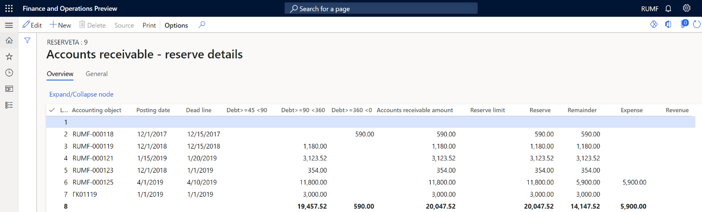
On each register line, you can review the information in the following columns:
- Line number
- Accounting object: The number of the customer invoice or vendor prepayment. This column is available only for registers that use the Accounting object accounting policy.
- Posting date: The date of the document that is shown in the Accounting object column. This column is available only for registers that use the Accounting object accounting policy.
- Dead line: The date that the debt must be repaid by. This column is available only for registers that use the Accounting object accounting policy.
- (Debt intervals): There is a separate column for each debt period that you configured earlier (for example, Debt >=0 <45, Debt >=45 <90, and Debt>=90 <360). Each column shows the amount of bad debt for the corresponding debt period.
- Accounts receivable amount: The amount of outstanding debt for the accounting object on the current line.
- Reserve limit: The amount of the bad debt reserve limit for the current reporting period. This amount is calculated according to the sequence that you configured earlier.
- Reserve: The total amount of the bad debts reserve.
- Remainder: The reminder of the bad debts reserve from the previous reporting period.
- Expense: The amount of the bad debts reserve for the current reporting period that is included in the expense.
- Revenue: The amount of the bad debts reserve for the current reporting period that is included in income. For example, the bad debts reserve was already created, but the outstanding debt was repaid.
- Ledger voucher for reservation: The number of the document that was used to post the ledger journal for accounts receivable bad debts reserves. This column is available only for registers that use the Total accounting policy.
- Date: The date of the current reporting period. This column is available only for registers that use the Total accounting policy.
Create a ledger journal for accounts receivable bad debts reserves
Go to Tax > Journal entries > Tax register journal.
Select the line where the Accounts receivable - bad debts reserve register for total accounting or the Accounts receivable - reserve details register for object accounting is calculated and approved.
On the Action Pane, select Ledger journal > Accounts receivable - bad debts reserve.
On the Action Pane, select Create >Create journal.
The journal is created. Its lines show the vouchers for calculating amounts of the reserves for the current period. The amounts of the reserves are calculated in the group of Accounts receivable - reserves registers.
On the Action Pane, select Lines to view the vouchers and other details.
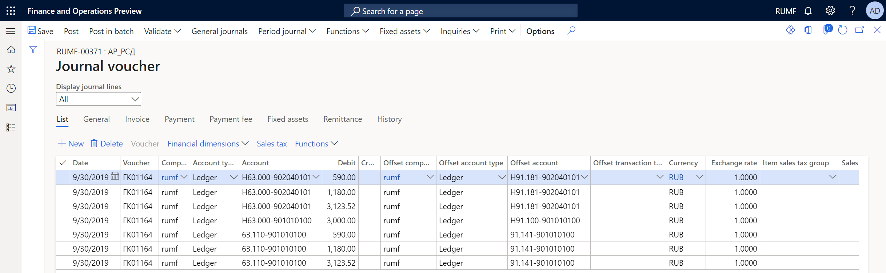
On the Action Pane, select Post > Post to post the journal.
Create a reversing entry ledger journal for accounts receivable bad debts reserves
Go to Tax > Journal entries > Tax register journal.
Select the period where the Accounts receivable - bad debts reserve register for total accounting or the Accounts receivable - reserve details register for object accounting is calculated and approved.
On the Action Pane, select Ledger journal > Accounts receivable - bad debts reserve.
On the Action Pane, select Create > Reverse journal.
The journal is created. Its lines show the vouchers for calculating amounts of the reserves for the current period. The amounts of the reserves are calculated in the group of Accounts receivable - reserves registers.
On the Action Pane, select Lines to view the vouchers and other details.
On the Action Pane, select Post > Post to post the journal.
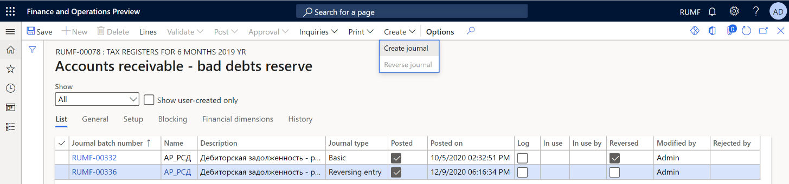
Tax registers for collecting information about the movement of the bad debts reserve in accounts receivable
There are four registers in this group.
| Register | Comment |
|---|---|
| Accounts receivable - bad debt reserve movement | For the TAX model when the Accounting policy field is set to Total |
| Accounts receivable - reserve movement (business accounting) | For the RAP model when the Accounting policy field is set to Total |
| Accounts receivable - reserve movement details | For the TAX model when the Accounting policy field is set to Accounting object |
| Accounts receivable - reserve movement details (business accounting) | For the RAP model when the Accounting policy field is set to Accounting object |
These registers summarize information about the movement and use of the bad debts reserve. They are calculated based on the results of the formation of the bad debts reserve and the use of the bad debt to write off hopeless debts.
Note
The write-off of hopeless debts is processed by using the bad debts reserve that is created at the end of the previous period.
The following illustration shows an example of the Accounts receivable - reserve movement details page.
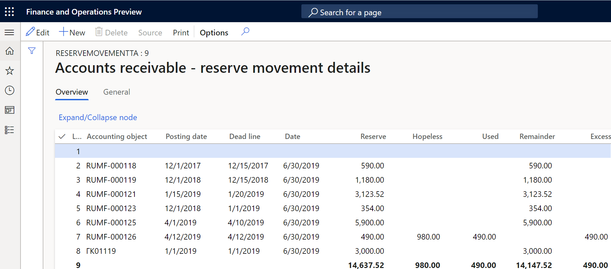
On each register line, you can review the information in the following columns:
- Line number
- Accounting object: The number of the customer invoice or vendor prepayment. This column is available only for registers that use the Accounting object accounting policy.
- Posting date: The date of the document that is shown in the Accounting object column. This column is available only for registers that use the Accounting object accounting policy.
- Dead line: The date that the debt must be repaid by. This column is available only for registers that use the Accounting object accounting policy.
- Date: The date when the reserve was created.
- Reserve: The total amount of the bad debts reserve that was calculated at the end of the previous period.
- Hopeless: The amount of the hopeless debts that were written off during the current period.
- Used: The amount of the reserve that was used to write off hopeless debts.
- Remainder: The remaining amount of the bad debts reserve from the previous period after use.
- Excess: The amount of written-off hopeless debt that exceeds the amount of the bad debts reserve on the reporting date. This amount is included in the non-operating expenses for the current period.
Tax registers for collecting information about the movement of accounts receivable
There are two registers in this group.
| Register | Comment |
|---|---|
| Accounts receivable movement | For the TAX model |
| Accounts receivable movement (business accounting) | For the RAP model |
These registers summarize information about operations for the movement of receivables to identify the amounts of bad debts (so that a reserve can be formed) and hopeless debts (so that they can be accounted as part of expenses).
The registers reflect all facts about the occurrence, payment, or write-off of accounts receivable from the beginning of the tax period to the reporting date. The amounts of overpayments to budgets of different levels aren't reflected in these registers.
For transactions in foreign currencies, records are also made for each revaluation of debt when reports are prepared.
The following illustration shows an example of the Accounts receivable movement page.
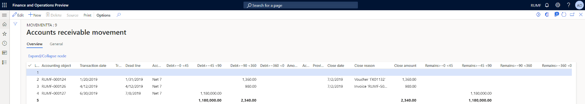
On each register line, you can review the information in the following columns:
- Line number
- Accounting object: The number of the customer invoice or vendor prepayment.
- Transaction date: The date of the document that is shown in the Accounting object column.
- Transaction description
- Dead line: The date that the debt must be repaid by.
- Accounting order: The terms of payment.
- (Debt intervals): There is a separate column for each debt period that you configured earlier (for example, Debt >=0 <45, Debt >=45 <90, and Debt>=90 <360). Each columns shows the amount of bad debt for the corresponding debt period.
- Amount/Exchange difference: The exchange amount or rate difference.
- Acquisition cost
- Provision of pawn
- Close date: The date of the write-off or payment transaction that is shown in the Accounting object column.
- Close reason: The description of the transaction for writing off or paying the debt.
- Close amount: The amount of the transaction for writing off or paying the debt.
- (Remains intervals): There is a separate column for each debt period that you configured earlier (for example, Remains >=0 <45, Remains >=45 <90, and Remains >=90 <360). Each column shows the remaining amount of the outstanding accounts receivable debts after the debt movement for the corresponding debt period.
Hopeless debt recognition and write-off
Recognize and write off hopeless debt
Calculate and approve the tax register journal for the previous period.
Go to Accounts receivable > Periodic tasks > Amortization > Accounts receivable amortization.
In the Calculation date field, select the date. That date will be used to select the calculation period.
In the Model field, select the debts calculation model.
The page shows hopeless debts as of the selected reporting date:
- The Customers tab shows the list of customer invoices.
- The Vendors tab shows the list of prepayments to suppliers.
- The Reserve field shows the amount of the formed bad debts reserve at the beginning of the current period that can be used to write off hopeless debt.
To review the original transactions for customers or vendors, select Transactions.
To add other customer or vendor transactions to the list, on the Action Pane, select Select customer debts or Select vendor debts.
Mark the debts that must be written off. The Total field in the Marked section at the bottom of the page shows the total amount of the marked lines.
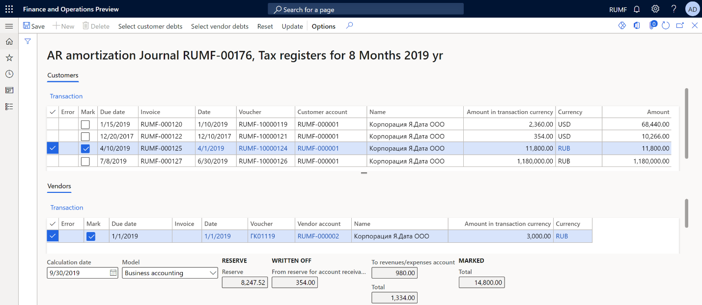
On the Action Pane, select Update. The marked transactions disappear. Additionally, in the Written off section at the bottom of the page, the amounts increase to the value that the Total field in the Marked section had before you selected Update. Transactions for customers and vendors, and transactions in the general ledger to write off each debt, are created. The date of the write-off operations corresponds to the date that you selected in the Calculation date field.
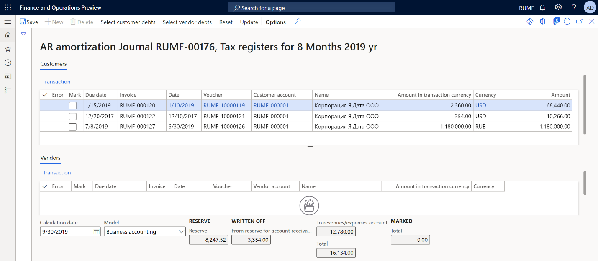
Note
The total amount of write-off transactions from the bad debts reserve is the lesser of the amount of the bad debt lines that you marked and the amount of the bad debts reserve that was created at the end of the previous period.
If the amount of hopeless debt that must be written off exceeds the amount of the bad debts reserve, additional transactions are generated for the remaining amount, to write the debt off to ledger account 91 non-operating expenses.
Cancel the write-off of hopeless debt
Follow these steps to cancel the write-off of hopeless debts.
Go to Accounts receivable > Periodic tasks > Amortization > Accounts receivable amortization cancellation.
In the Calculation date field, select the date. That date will be used to select the calculation period.
In the Model field, select the debts calculation model.
The page shows written-off debts as of the selected reporting date:
- The Customers tab shows the list of written-off customer invoices.
- The Vendors tab shows the list of written-off prepayments to suppliers.
- The Reserve field shows the amount of the formed bad debts reserve at the beginning of the current period that can be used to write off hopeless debt.
- The Written off field shows the amount of the written-off bad debts from the reserve for accounts receivable or to the revenues/expenses account.
To review the original transactions for customers or vendors, select Transactions.
Mark the written-off debts that must be canceled. The Total field in the Marked section at the bottom of the page shows the total amount of the marked lines.
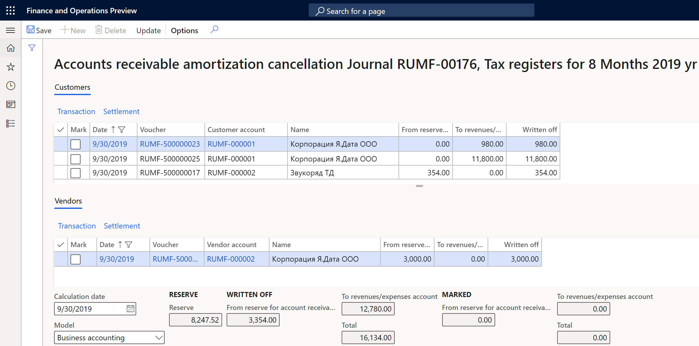
On the Action Pane, select Update. The marked transactions disappear. In the Written off section at the bottom of the page, the amounts decrease to the value that the Total field in the Marked section had before you selected Update. Transactions that cancel the write-off of accounts receivable are then generated.